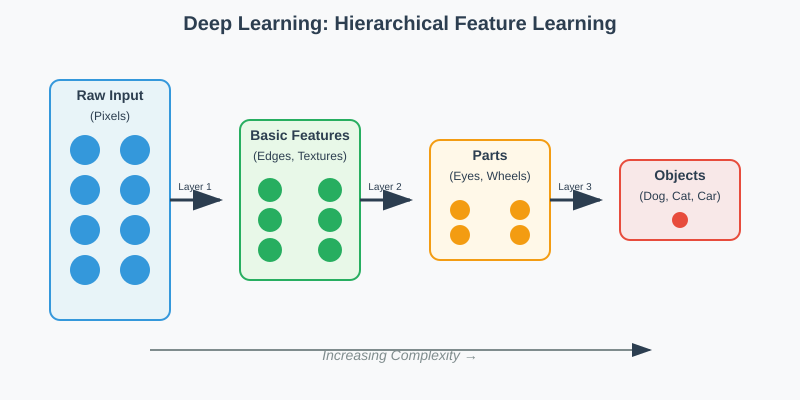
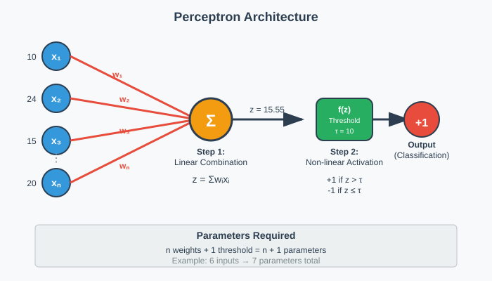
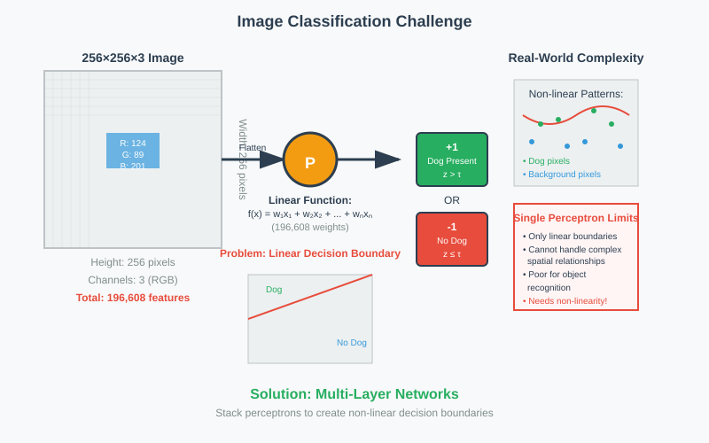
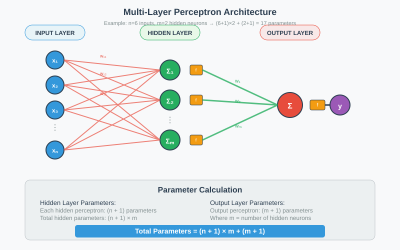
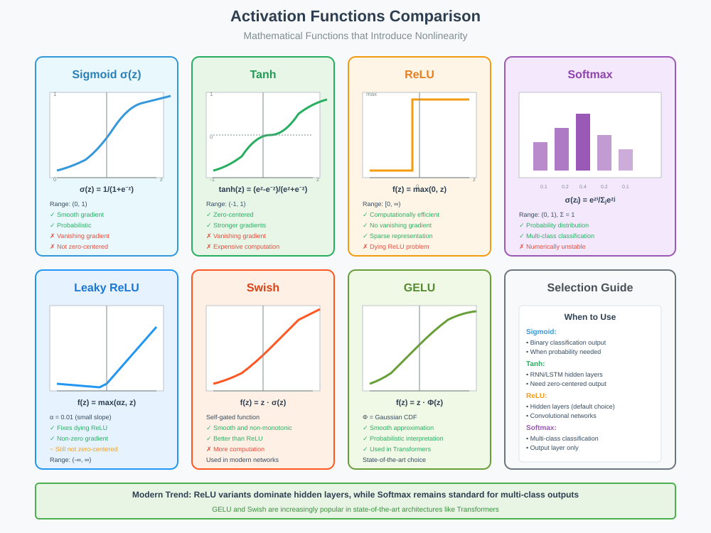

Classification Using a Single Perceptron
Quick Navigation
- Introduction to Deep Learning
- The Perceptron: Basic Building Block
- Image Classification Example
- Multi-Layer Perceptrons
- Numerical Example Walkthrough
- Deep Neural Networks
- Activation Functions
- Implementation Guidelines
- References & Further Reading
Introduction to Deep Learning
Deep learning derives its name from the hierarchical layers that compose these neural networks. The "deep" in deep learning refers to the multiple layers that enable these systems to learn complex patterns through hierarchical feature extraction.

As Ian Goodfellow, inventor of Generative Adversarial Networks (GANs), explains:
"The hierarchy of concepts allows the computer to learn complicated concepts by building them out of simpler ones. If we draw a graph showing how these concepts are built on top of each other, the graph is deep, with many layers."
Key Characteristics of Deep Learning
- Automatic Feature Extraction: Deep learning models perform feature learning directly from raw data
- Hierarchical Representations: Lower layers identify basic features, higher layers combine them into complex patterns
- Non-linear Transformations: Each layer introduces non-linearity to capture complex relationships
The Perceptron: Basic Building Block
The perceptron serves as the fundamental unit of neural networks, sometimes called a neuron. Understanding its operation is crucial for grasping deep learning concepts.

Perceptron Operation
A perceptron operates in two distinct steps:
Step 1: Linear Combination
The perceptron computes a weighted sum of its inputs:
Step 2: Threshold Function
The linear combination is passed through a threshold function:
Parameter Requirements
Each perceptron requires:
- n weights corresponding to n inputs
- 1 threshold value (τ)
- Total parameters: n + 1
Connection to Support Vector Machines
Limitation: Perceptrons only recognize linear patterns
SVM Approach: Map input space to higher dimensions using kernels
Deep Learning Approach: Layer perceptrons to achieve non-linearity
Image Classification Example
Consider the classic problem of identifying whether an image contains a dog. This example illustrates why simple linear functions are insufficient for complex pattern recognition.

Image Representation
Color Images: Each pixel contains three values (RGB)
Dimensions: 256 × 256 × 3 array
- Width: 256 pixels
- Height: 256 pixels
- Channels: 3 (Red, Green, Blue)
Total Features: 196,608 pixel values
The Linear Function Challenge
A single perceptron attempts to find a linear function of pixels that:
- Returns positive values for dog images
- Returns negative values for non-dog images
Problem: No simple linear function of pixels can reliably distinguish complex visual patterns like the presence of animals.
Why Linear Functions Fail
- Complex Patterns: Real-world objects have non-linear boundaries
- Spatial Relationships: Linear functions cannot capture spatial arrangements
- Invariance Requirements: Objects appear at different scales, rotations, and positions
Multi-Layer Perceptrons
To overcome the limitations of single perceptrons, we combine multiple perceptrons in layers, creating more expressive functions.

Network Architecture
Input Layer: Raw data features (not counted in layer count)
Hidden Layer: Intermediate processing layer that computes complex patterns
Output Layer: Final classification decision
Layer Counting Convention
The input layer is not included in the total count.
Parameter Calculation
For a network with:
- n input features
- m hidden layer perceptrons
- 1 output perceptron
Total Parameters:
Breakdown: - Hidden layer: (n + 1) × m parameters - Output layer: (m + 1) parameters
Numerical Example Walkthrough
Let's trace through a concrete example with specific values to understand the computational process.
Network Configuration
- Input Features: 6 values
- Hidden Layer: 2 perceptrons
- Output Layer: 1 perceptron
Input Values
| Feature | Value |
|---|---|
| x₁ | 10 |
| x₂ | 24 |
| x₃ | 15 |
| x₄ | 18 |
| x₅ | 5 |
| x₆ | 20 |
Hidden Layer Calculations
Perceptron 1 (Threshold = 10)
Weights: [0.2, 0.1, 0.15, 0.25, 0.4, 0.12]
Since 15.55 > 10, output = +1
Perceptron 2 (Threshold = 15)
Weights: [0.14, 0.23, 0.2, 0.3, 0.28, 0.1]
Since 18.72 > 15, output = +1
Output Layer Calculation
Input: [+1, +1] from hidden layer
Weights: [0.5, 0.2], Threshold: 0.5
Since 0.7 > 0.5, Final Output = +1
Parameter Summary
Deep Neural Networks
Modern deep learning extends the multi-layer concept to create networks with 6-8 layers and millions of parameters, enabling sophisticated pattern recognition.
Hierarchical Feature Learning
Lower Layers: Identify basic features (edges, textures)
Middle Layers: Combine basic features into parts (eyes, wheels, corners)
Higher Layers: Assemble parts into complete objects (faces, cars, buildings)
Biological Inspiration
Deep networks parallel the visual cortex structure:
- Similar Hierarchy: Both use layered processing
- Feature Progression: Simple to complex feature detection
- Computational Depth: 6-8 layers match biological constraints
- Processing Speed: Human recognition speed validates layer depth limits
Practical Implementation
Modern Networks: 6-8 layers with millions of perceptrons
Feature Sharing: Lower-level features useful across multiple object classes
Efficiency: Common feature extraction reduces parameter redundancy
Activation Functions
The threshold function is just one type of activation function. Modern networks use various activation functions to introduce non-linearity effectively.

Why Non-linearity Matters
Without Non-linearity: Stacked linear functions remain linear regardless of depth
Real-world Complexity: Physical phenomena rarely follow linear patterns
Decision Boundaries: Complex problems require curved decision boundaries
Common Activation Functions
1. Sigmoid Function
Range: (0, 1)
Use Case: Binary classification output layers
Advantages: - Smooth, differentiable - Probabilistic interpretation
Disadvantages: - Vanishing gradient problem - Not zero-centered
2. Tanh (Hyperbolic Tangent)
Range: (-1, 1)
Advantages: - Zero-centered output - Faster learning than sigmoid
Disadvantages: - Still suffers from vanishing gradients
3. ReLU (Rectified Linear Unit)
Function: f(x) = max(0, x)
Range: [0, ∞)
Advantages: - Computationally efficient - Reduces vanishing gradient problem - Default choice for hidden layers
Disadvantages: - Dying ReLU problem (neurons stuck at zero)
4. Leaky ReLU
Function: f(x) = max(αx, x) where α ≈ 0.01
Advantages: - Solves dying ReLU problem - Better gradient flow
5. Softmax
Use Case: Multi-class classification
Function: Converts logits to probability distribution
Selection Guidelines
Output Layer Selection:
- Regression: Linear (no activation)
- Binary Classification: Sigmoid
- Multi-class Classification: Softmax
Hidden Layer Selection:
- Default Choice: ReLU or variants
- Specific Needs: Tanh for zero-centered data
Implementation Guidelines
Weight Initialization
Problem with Zero Initialization:
- Symmetry Problem: All neurons compute identical outputs
- Identical Gradients: All weights receive the same gradient updates
- No Learning: Network behaves like a linear model regardless of depth
- Wasted Capacity: Hidden units remain symmetric throughout training
Recommended Approaches:
- Xavier/Glorot: For sigmoid and tanh activations
- He Initialization: For ReLU activations
- Research Topic: Active area of ongoing investigation
Training Considerations
Parameter Learning: Weights must be learned from data, not set randomly
Optimization Challenges:
- High Dimensionality: Millions of parameters create vast search spaces
- Local Minima: Gradient-based methods may get stuck
- Mysterious Success: Why these methods work remains partially understood
Practical Solutions:
- Stochastic gradient descent variants
- Adaptive learning rates
- Regularization techniques
- Batch normalization
Architecture Decisions
Network Depth:
- Start with 2-3 hidden layers
- Increase depth based on problem complexity
- Monitor for overfitting
Layer Width:
- Hidden layer size typically between input and output dimensions
- Experiment with different configurations
- Consider computational constraints
References & Further Reading
Academic Papers
-
Rosenblatt, F. (1958): "The Perceptron: A Probabilistic Model for Information Storage and Organization in the Brain" - Psychological Review
-
Rumelhart, D.E., Hinton, G.E., Williams, R.J. (1986): "Learning representations by back-propagating errors" - Nature
-
LeCun, Y., Bengio, Y., Hinton, G. (2015): "Deep learning" - Nature
Books
-
Goodfellow, I., Bengio, Y., Courville, A.: "Deep Learning" - MIT Press (2016)
-
Nielsen, M.: "Neural Networks and Deep Learning" - Online textbook
Online Resources
-
CS231n Stanford Course: Convolutional Neural Networks for Visual Recognition
-
Andrew Ng's Machine Learning Course: Coursera specialization
-
Papers With Code: Latest research implementations and benchmarks
Implementation Frameworks
- PyTorch: Dynamic computation graphs, research-friendly
- TensorFlow: Production-ready, extensive ecosystem
- JAX: High-performance, functional programming approach